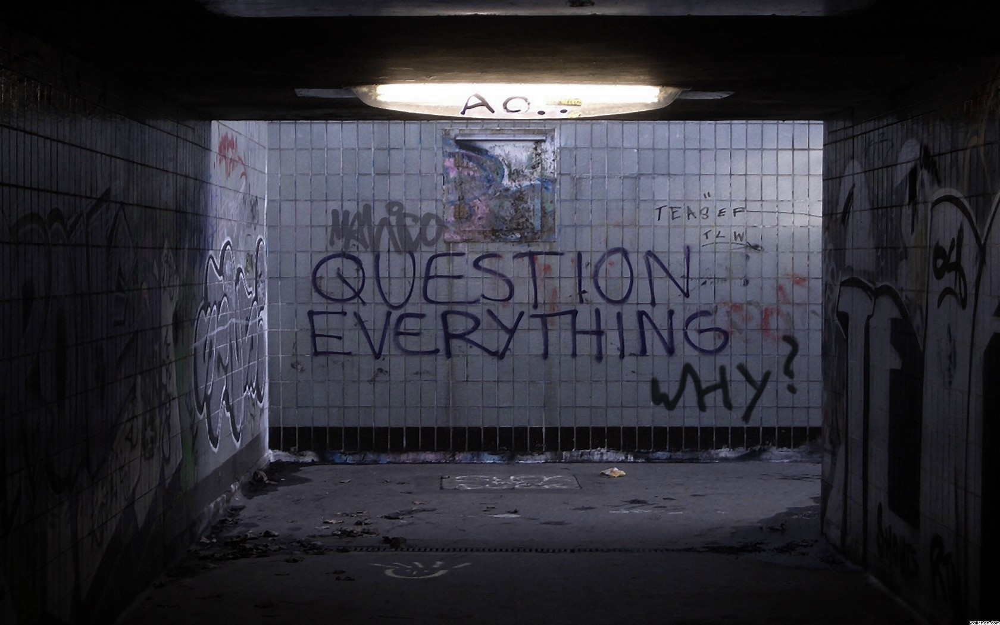
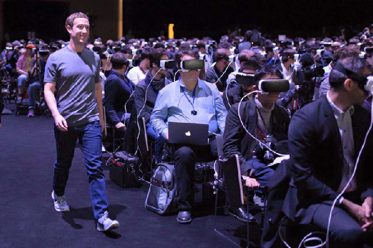
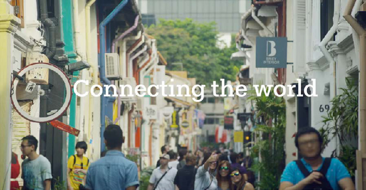
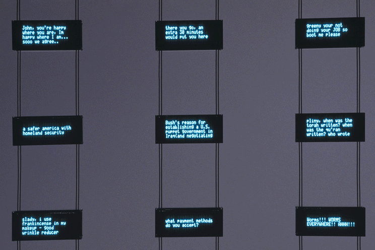
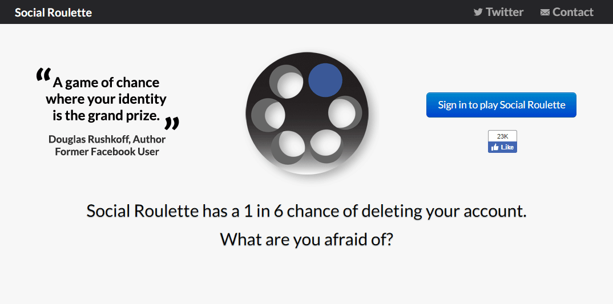
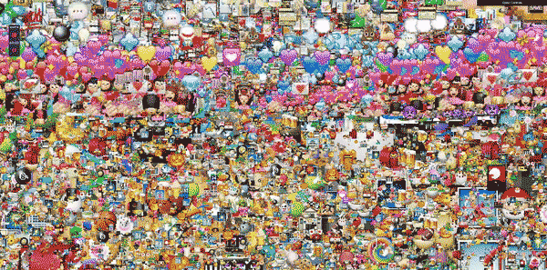
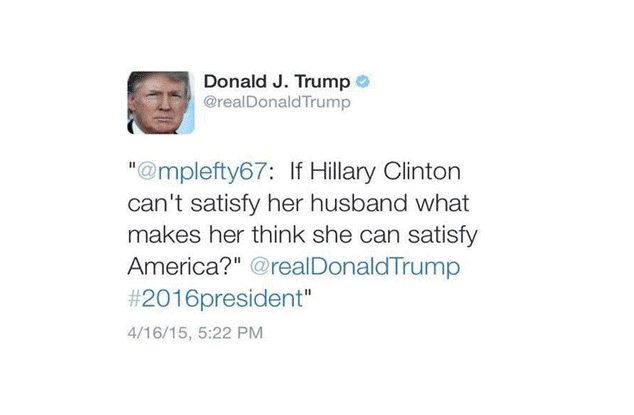
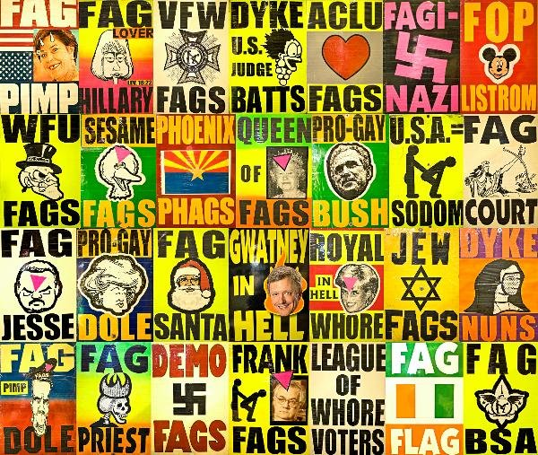
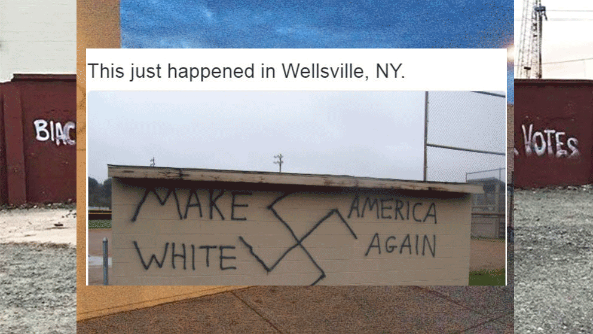
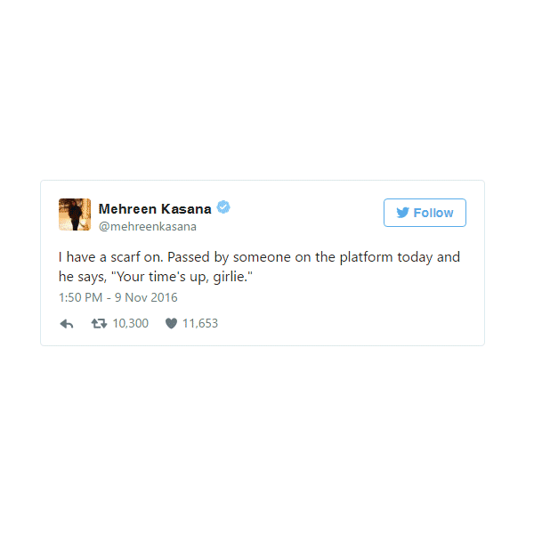

Between facts, opinions and reflections.
Trust nothing, question everything.

At what point social media molds who we are?
Black Mirror S03E01 - Nosedive.
“We start from the observation that when users evaluate content contributed by a fellow user (e.g., by liking a post or voting on a comment) they also implicitly evaluate the author of that content, and that this can lead to complex social effects.”
Justin Cheng, How Community Feedback Shapes User Behavior” Stanford University, p. 9.
https://cs.stanford.edu/people/jure/pubs/disqus-icwsm14.pdf
“Whether or not the demonstrations in Brazil or Hong Kong or the uprisings of the Arab Spring would have happened without social media, such platforms clearly played an important role in shaping the kind of transition that followed.”
Collective Action Goes Digital, “Could people mobilize today without social media?”, Princeton University, p. 20.
http://press.princeton.edu/chapters/s10582.pdf
Social perception manipulation.
@louise.delage.
Fake instagram account calling upon social alcoholism.
“Media [...] determines, shape, molds the lens through which I view the world. [...] In general therms, media determines what can be said. Media determines who can say it, how it can be said, and mostly importantly, who can hear it.”
Tim Weninger, Changing the hive mind, TEDx Talks.
https://www.youtube.com/watch?v=IVsz5xFd3qU&ab_channel=TEDxTalks

The next big thing in tech is...
Mark Zuckerberg no Mobile World Congress.
“55 percent of the people who visit a Web page stay for less than 15 seconds. Yet the site with the most traffic wins, regardless of how fleeting that traffic might be.”
Frank Rose, The Attention Economy, The Milken Institute Review, p. 45.
http://www.frankrose.com/The_Attention_Economy.pdf
"In the tech world, there’s even a small industry built around Apple product rumors. Websites such as MacRumors, Cult of Mac, AppleInsider, the Boy Genius Report, and others compete to source and report rumblings about the next iPhone, iPad, or Apple Watch. These claims aren’t without effect. A 2014 study of merger rumors in the financial press found that “rumors in the press have large stock price effects.” Companies, like J.C. Penney, have seen their stock prices drop after rumors took hold on message boards, the trading floor, Twitter, and elsewhere."
Craig Silverman, “Literature Review: What We Know About the What, How, and Why of Rumors “ , Lies, Damn Lies, and Viral Content, Columbia Journalism School, p. 17 - 18.
http://towcenter.org/wp-content/uploads/2015/02/LiesDamnLies_Silverman_TowCenter.pdf

Technology appeals to us most where we are most vulnerable.
Facebook: Connecting the world takes every one of us.
https://www.youtube.com/watch?v=kfuvk6C97rg&ab_channel=Facebook
“We expect more from technology and less from each other. Technology appeals to us most where we are most vulnerable. We are lonely but we are afraid of intimacy. The illusion of companionship without the demands of friendship.”
Sherry Turkle, Connected, but alone?, TEDx Talks.
https://www.ted.com/talks/sherry_turkle_alone_together#t-793310
There is an enormous necessity to control everything. Constant digital connection - that does not imply human connection - creates a constant need of not being alone, resulting in anxiety and depression.
+ Digital conections - Human relations

Social media and the Ego.
Mark Hansen and Ben Rubin: Listening Post, Real-Time Data Responsive Environment 2001.
Ironically, even if the fathers of social media defend that they were created with the intention to connect people, they mostly tend to focus on the self, the Ego. A lot of what is supposed to be "it self", easily becomes an exposition of how much "I" am something, wheter that be caring, loving, intelectual, or worried about something especific.

New media, new values.
Social Roulette has 1 in 6 chances in deleting your facebook account. “A game of chance where your identity is the grand prize”.
http://www.socialroulette.net/
Social media started to have such an importance that the thought of losing an account might be somewhat terrorizing. So much of our lives depend on them that they become an extension of our being, obtaining equal values, if not bigger, than our limbs or senses. At what point we could bet their existence?
Quantity x Quality communication
Twiter Matrix is a website that visualizes tweets matrix-like. The scene becomes completly ironic when you start seeing emojis.
https://konard.github.io/twittermatrix/messages.html
Of all posts, tweets and other online publication, how many of those carry a meaningful message? How many of them are repeated in different ways, or are just meaningless? Even if there is quality content, they might end up diffused by the previous, and end up in a puddle of emojis, rambling texts, and useless information.

Information bombardment
Emoji Wall is literally the embodiment of being bombarded with emojis.
http://kitasenjudesign.com/work/72/
How much has our brain changed since we started being constantly attacked by a faster flow of information? How much of our memory is occupied with advertisement of things that we do not want to buy, of emails that we do not want to read and with videos that we wish we didn't saw? How far our reality has been altered by what we created?

The relevance of a tweet is determined by who published it.
Even more when you are the leader of one of the most powerful countries.

Safe-spaces for hete speech.
A infamous - and almost comic, if not tragic - church, owner of the phrase "God hates [something that I am not(probably)]!"

The racist post-trump world.
The imediate surreal reaction after Donald Trump won the 2016 U.S.A. elections.
Who is ok, who is not ok.
The european imigration crisis puts to question who is welcome.
Media is the primary weapon to bring terror.
But also, weirdly, a huge source of "entertainment".

Bigotry is not opinion.
And racist ideals are not facts.
Who will be next?
The (never gone) return of political mediactic acts of violence.
